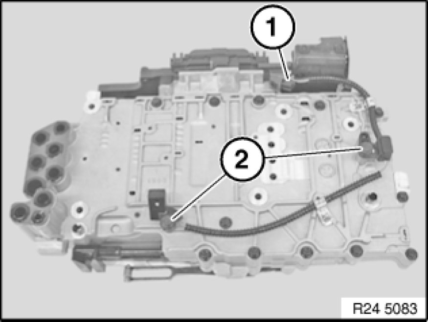

Transmission Speed Sensor: Service and Repair
24 35 700 - Removing and installing/replacing input and output speed sensor (GA6L45R)

Important!
After completion of work, check transmission fluid level Procedures.
Use only approved transmission oil.
Failure to comply with this instruction will result in serious damage to the transmission.

Necessary preliminary tasks:
- Remove mechatronics Removal and Replacement

Unlock and disconnect plug (1).
Release screws (2).
Detach input and output speed sensor from mechatronics.
Tightening torque 24 30 4AZ Hydraulic/Electric Control Parts and Controlling Elements.